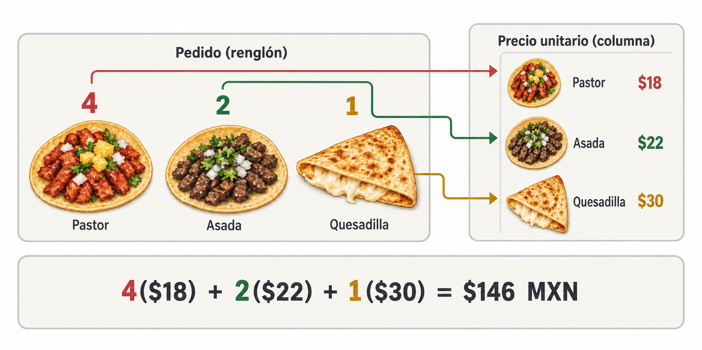

Artículo de divulgación
De la taquería al álgebra lineal
Una forma intuitiva de entender el producto renglón por columna
Conoce el significado de la multiplicación de matrices. A partir de un ejemplo cotidiano, veremos cómo se combina cada renglón de la primera matriz con cada columna de la segunda y qué significado tiene cada valor obtenido.
Introducción
La multiplicación de matrices suele enseñarse mediante una frase que parece sencilla:
Se multiplican renglones por columnas.
El problema es que memorizar esa instrucción no necesariamente ayuda a comprenderla. ¿Por qué se combina un renglón de la primera matriz con una columna de la segunda? ¿Por qué los productos se suman? ¿Qué representa cada número del resultado?
Para responder estas preguntas, como ejemplo, imaginemos que gestionamos los pedidos en una taquería.
Un pedido convertido en números
Supongamos que en una mesa se ordenaron cuatro tacos al pastor, dos tacos de asada y una quesadilla. Podemos representar el pedido mediante un renglón:
Cada posición tiene un significado:
Supongamos que los precios unitarios son 18, 22 y 30 pesos, respectivamente. Los colocamos en una columna y conservamos exactamente el mismo orden:
Para calcular el importe de la cuenta, asociamos cada cantidad con su precio:
Por lo tanto, la cuenta de la mesa es de 146 pesos.

Entonces, para multiplicar un renglón por una columna se multiplican las entradas correspondientes y después se suman los resultados. El producto no genera otro renglón ni otra columna, sino un solo número.
Ahora usemos dos matrices
Supongamos que deseamos registrar los pedidos de dos mesas. La primera ordenó cuatro tacos al pastor, dos de asada y una quesadilla. La segunda pidió tres tacos al pastor, cuatro de asada y dos quesadillas.
Esta información se representa mediante la matriz
Cada renglón corresponde a una mesa y cada columna representa un producto.
Ahora reunamos dos datos de cada alimento: su precio y su contenido energético aproximado.
La matriz correspondiente es
En esta matriz, cada renglón corresponde a uno de los productos y las columnas representan el precio y las calorías.
El orden es fundamental. Las columnas de \(A\) y los renglones de \(B\) deben referirse a los mismos productos:
De otro modo, estaríamos multiplicando cantidades por datos que no les corresponden.
¿Se pueden multiplicar estas matrices?
La matriz \(A\) tiene dos renglones y tres columnas, por lo que su dimensión es \(2\times 3\). La matriz \(B\) tiene tres renglones y dos columnas, así que su dimensión es \(3\times 2\).
Podemos escribir:
Los dos números interiores deben coincidir. En este caso ambos son 3 porque tenemos tres tipos de productos. Los números exteriores indican la dimensión de la matriz resultante.
Por consiguiente, el producto \(AB\) será una matriz de \(2\times 2\):
El procedimiento renglón por columna
La posición de cada resultado indica qué renglón y qué columna debemos combinar.
Para obtener \(c_{11}\), usamos el primer renglón de \(A\) y la primera columna de \(B\):
Multiplicamos las entradas correspondientes y sumamos:
Este número es el costo total del pedido de la primera mesa.
Para calcular \(c_{12}\), conservamos el primer renglón de \(A\), pero ahora utilizamos la segunda columna de \(B\):
El resultado representa las calorías aproximadas consumidas en la primera mesa.
Continuamos con el segundo renglón de \(A\). Para obtener \(c_{21}\), lo multiplicamos por la primera columna de \(B\):
Finalmente, combinamos el segundo renglón con la segunda columna:
Al reunir los cuatro resultados obtenemos
La matriz resultante puede interpretarse así:
Los renglones del resultado conservan el significado de los renglones de la primera matriz, es decir, representan las mesas. Sus columnas adoptan el significado de las columnas de la segunda matriz, ahora representan el importe y las calorías.
Esta observación permite entender algo importante. La multiplicación matricial no es solamente una sucesión de operaciones aritméticas. También es una forma de relacionar y transformar información.
La regla general
Si \(A\) es una matriz de dimensión \(m\times n\) y \(B\) es una matriz de dimensión \(n\times p\), entonces el producto
es una matriz de dimensión \(m\times p\).
Cada entrada \(c_{ij}\) se obtiene multiplicando el renglón \(i\) de \(A\) por la columna \(j\) de \(B\):
Aunque la fórmula parece más abstracta, expresa exactamente lo que hicimos en la taquería: emparejar cantidades relacionadas, multiplicarlas y sumar sus contribuciones.
El índice \(i\) selecciona un renglón de la primera matriz. El índice \(j\) selecciona una columna de la segunda. Por eso el valor \(c_{ij}\) ocupa el renglón \(i\) y la columna \(j\) del resultado.
Tres errores frecuentes
- El primer error consiste en multiplicar las entradas que ocupan la misma posición. Esa operación existe y se conoce como producto elemento a elemento o producto de Hadamard, pero no es el producto matricial ordinario.
- El segundo es ignorar las dimensiones. Para calcular \(AB\), el número de columnas de \(A\) debe coincidir con el número de renglones de \(B\).
El tercero es cambiar el orden de los datos. Si la primera columna de \(A\) representa tacos al pastor, el primer renglón de \(B\) también debe contener la información de los tacos al pastor.
Además, el orden de las matrices importa. En general,
\[ AB\neq BA. \]Incluso cuando ambos productos existen, normalmente tienen dimensiones, valores e interpretaciones diferentes.
Un ejercicio breve
Una tercera mesa pide dos tacos al pastor, un taco de asada y tres quesadillas. Su pedido se representa mediante
Usando la misma matriz de precios y calorías, ¿cuál es el importe de la cuenta y cuántas calorías representa aproximadamente el pedido?
El cálculo es
Para el importe:
Para las calorías:
El resultado es
La mesa deberá pagar 148 pesos y su pedido representa aproximadamente 1370 kilocalorías.
Más que una regla mecánica
Las matrices permiten organizar información y convertirla en nuevos resultados. En el ejemplo, una matriz describía pedidos y otra contenía características de los productos. Al multiplicarlas obtuvimos, de una sola vez, el importe y las calorías correspondientes a cada mesa.
Este mismo principio aparece en economía, computación, robótica, procesamiento de imágenes, gráficos tridimensionales e inteligencia artificial. Puede cambiar el contexto, pero la operación fundamental permanece: cada entrada del resultado surge de aplicar o “distribuir” un renglón sobre una columna.
Cuando se comprende esa idea, la multiplicación de matrices deja de ser una receta difícil de recordar y se convierte en una manera natural de relacionar información.
Bibliografía
- Lay, D. C., Lay, S. R., & McDonald, J. J. (2016). Álgebra lineal y sus aplicaciones (5.ª ed.). Pearson Educación.
El planteamiento de comenzar con una situación cotidiana está inspirado en el video “À quoi sert une matrice?”, del canal MATHmana.